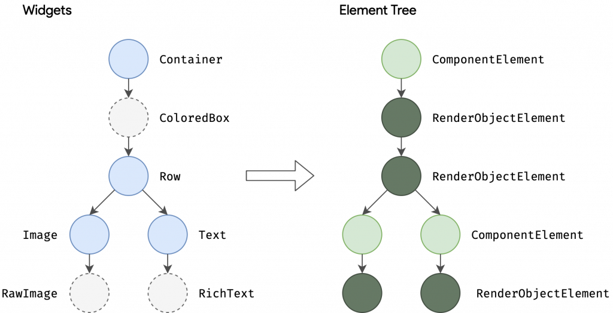
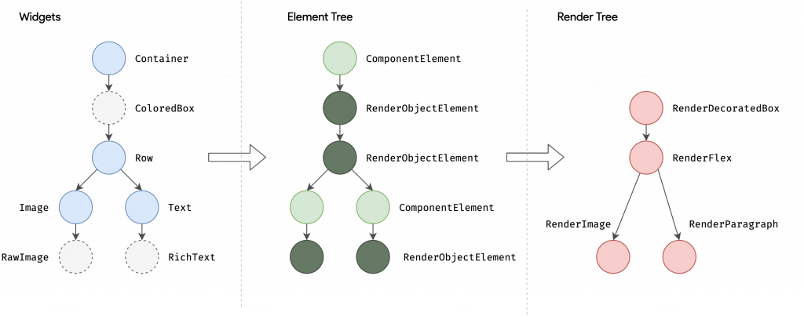

Day 59：Flutter 架構概覽｜前世與今生
出生背景
在理解 Flutter 的架構以前，我們先來聊一下出生背景。Flutter 的前身稱為 “Sky”，於 2015 年首次亮相。它早期的目標是開發用於 Google Fuchsia 操作系統的 SDK。後來，Flutter 不斷發展壯大，成為一個獨立的開源項目。（而 Google Fuchsia 呢？感覺準備退出歷史舞台）
有興趣可以看看 Flutter 初次露出的珍貴影像：
Google Fuchsia 本來的立意就是想打造跨平台的 OS，所以 Flutter 這些得天獨厚的條件都要感謝 Fuchsia 。
Flutter 架構概覽
有興趣的人可以到 Flutter 網站上看，我這裡只做重點的節錄：
Architectural layers：
Flutter 的架構分為三個主要的層，分別是：Embedder 層、Engine 層和 Framework 層。下面是這些層的詳細說明：
- Embedder 層：
這是 Flutter 架構中的最底層，主要負責與特定操作系統交互，使 Flutter 可以運行在不同的平台上。
-
Embedder 層負責處理必要的操作，以便將 Flutter 語言與特定操作系統相互翻譯。
-
管理事件循環（Event loop）。
-
Engine 層：
Engine 層主要是用 C/C++ 編寫的，所以有在各個平台支援的能力，讓 Flutter 可以被帶到各個平台。
-
負責光柵化（rasterizing）組合好的場景。
-
此層負責低級 API 的實現，管理幀的渲染，網絡支持等。
光柵化指的是把向量圖繪製成點陣圖的過程，在 Flutter 就是 RenderObject 組成 Layer 後再繪製到畫面上的過程。
- Framework 層：
Framework 層是用 Dart 程序語言編寫的，開發者主要在此層中工作，以理解和使用 Flutter。
- 此層提供了豐富的 widgets 和庫，使開發人員可以高效地開發 Flutter 應用程序。
Flutter 的架構可以想像成一座由下至上建造的大樓，每一層都依賴於它下面的層，就像大樓的每一層都需要依賴於它下面的結構。這樣的架構讓 Flutter 有很好的擴展性和組織性。
每個層都不是單一的結構，而是由一系列獨立的庫組成，這些庫只依賴於它們下面的層的功能。這樣的設計讓第三方開發者能夠輕鬆地添加擴展到 Flutter SDK，並且這些層的結構使得每個層都不具有對下層的特權訪問，每個層只能使用由下層公開的 API。

Rendering and layout
如開頭講到 Flutter 的目標是讓開發者能夠用一套代碼來開發多平台的應用，而不需要為每個平台編寫不同的代碼。而且開發初期，是以 OS 為目標所以 Flutter 的初始做法就不是去考慮要發佈在 Android 或 iOS 上，而是直接操作渲染引擎。這裡 Flutter 團隊可能參考的就是 Android 的做法：
Android 渲染：
-
在傳統的 Android 應用中，當你想要繪制某些東西（比如一個按鈕或者文字）時，你會首先使用 Android 的框架（主要是用 Java 寫的）來告訴它你想要繪制什麼。
-
接著，Android 會使用一個叫做 Skia 的圖形引擎（用 C/C++ 編寫）來真正的繪制你想要的畫面。
-
最後，這個繪制好的畫面會由你的手機的 CPU 或 GPU 顯示出來。
其他跨平台 Framework 作法（如：React Native）：
-
大多數跨平台框架會在 Android 和 iOS 的原生 UI 庫之上加上一層“包裝”，讓開發者可以用一套代碼來編寫應用。
-
但這種方式會增加一些額外的步驟和開銷，因為你的代碼（通常是用 JavaScript 寫的）需要通過這層“包裝”來與原生的系統庫交互。
Flutter 的獨特之處:
-
不同於其他跨平台框架，Flutter 選擇了一條不同的路。它有自己的小部件庫，不依賴於原生的 UI 庫。
-
你的 Flutter 代碼會直接編譯成本地代碼，並且利用 Skia 來繪制畫面。這樣就避免了那些額外的“包裝”步驟，提高了效率。
-
這也意味著，不管你的應用是在 Android、iOS 還是其他平台上運行，它的性能都會很不錯，因為它直接與底層的繪圖引擎交互，避免了很多不必要的開銷。
通過這種方式，Flutter 能夠提供高效的渲染效能，並且讓開發者能夠用一套代碼來開發多平台的應用，節省了很多時間和精力。
Build: from Widget to Element
假設我們現在有一個 Widget 長得像下面這樣：
Container(
color: Colors.blue,
child: Row(
children: [
Image.network('images/1.png'),
const Text('A'),
],
),
);
我們知道， 在 Flutter 裡面每個 Widget 都有可能包含其他 Widget 。到 Container 的 build 方法裡面可以找到，如果 color ≠ null 他會回傳一個 ColoredBox 的 Widget 給我。
if (color != null)
current = ColoredBox(color: color!, child: current);
這也就是為什麼你在用 Flutter Inspector 的時候， Widget Tree 會比你寫的程式碼要長的多。
在各種 Widget 追到最後，會發現他們被分為兩種：
-
ComponentElement, 其他 Element 的 host。 -
RenderObjectElement, 參與佈局或繪畫階段的 Element。
他們之間的關係可以被理解為： RenderObject 是負責渲染的基本組件，而 ComponentElement 是負責創建和管理 RenderObject
以圖片來看就是像下面這樣：

接下來就到繪製的步驟了：佈局和渲染的過程主要涉及以下幾個步驟：
-
佈局：Flutter 首先需要對 widget 層次結構進行佈局，確定每個元素的大小和位置。
-
建立 Render Tree：通過
RenderObject和RenderObjectElement來建立渲染樹，每個節點在渲染樹中對應一個RenderObject。 -
繪製：
RenderObject定義了繪製的抽象模型，例如RenderParagraph用於渲染文本，RenderImage用於渲染圖像，而RenderTransform用於在繪製其子元素之前應用變換。

更深入的講解可以看 Flutter 的官方頻道：
Render 場景
Aggressive composability
Flutter 採用了一個叫做 Aggressive composability 的策略，它盡可能地讓每個 Widget 都是其他 Widget 組合而來。而這些 Widget 本身則是由越來越基礎的 Widget 組合而成。例如，Padding 是一個 Widget ，而不是其他 Widget 的屬性。
Aggressive composability 這個哲學貫穿了整個 Flutter 的設計思想，從架構到底層實現都是統一遵照這套邏輯。
Sublinear layout
為了要貫徹 Aggressive composability，不可避免的就會讓我們的 Widget Tree 越來越龐大。所以 Flutter 必須依靠更快速的渲染流程來支持，也需要更好的方式來管理 Widget 避免出現錯誤，Flutter 有了下面幾個解套方案：
- 由上到下的渲染： Flutter 的佈局算法每幀執行一次，並且在單次傳遞中完成。 在每一幀中：
Constraint 由父對象通過調用其子對象的 layout 方法向下傳遞。
- 子對象遞歸地執行自己的 layout，然後通過從其 layout 方法 return 要繪製的幾何圖形。
因此佈局期間，每個渲染對象最多被訪問兩次：一次是在樹向下的過程中，另一次是在樹向上的過程中。

- immutable Widget：
我們可以看到在 Flutter 中 每個 Widget 實際上都是
immutable的，所以我們建立 Widget Tree 之後，他是無法被修改的，這樣有這些好處
效能: 有助於 Flutter 高效地重建 UI。每次狀態改變時，Flutter 可以快速地比對新舊 widget 來確定實際需要重繪的部分。
-
狀態管理的簡化: 通過將 UI (widget) 和狀態分離，Flutter 鼓勵使用更預測和可維護的狀態管理模式。在 Flutter 中，當狀態改變時，你會創建一個新的 widget 樹。與此同時，狀態本身可能會被存儲在
State對象中，這是 mutable 的，但它的生命週期和相關的 widget 生命週期是分開的。 -
減少錯誤: 不可變性減少了由於多處修改同一個物件而引起的錯誤。因為 widget 是不可變的，你不必擔心其他代碼意外地修改它。
-
Functional Programming: Flutter 的不可變 widget 設計也體現了 Functional Programming 的一些理念。它鼓勵使用純函數和不可變數據結構。這有助於減少副作用，使代碼更易於理解和測試。
@immutable
abstract class Widget extends DiagnosticableTree {
...
}
- Linear reconciliation 如上所說，每個 Widget 的內容並不能直接被修改，我們要做的更新或移除，都是發生在整個 Widget Tree 上面，而 Flutter 採用的方法並不是常見的 tree-diffing algorithm（在最壞的情況下，比較兩棵樹的時間複雜度是 O(n^3)，n 是節點的數量）。而是通過一些其他方法來達到理想上是 O(n) 的情況： 最佳化場景：
舊的子列表是空的。
-
兩個列表完全相同。
-
列表中只在一個地方插入或移除了一個或多個小部件。
-
如果每個列表都包含具有相同鍵的小部件，則這兩個小部件會被匹配。
在比對過程中，會把新舊兩個 Widget Tree 拉出來，並透過比較裡面所有 Widget Key 組成的 hash 值，來確認 Widget Tree 是否有被變動過。另外還能透過被稱為 tree surgery 的方法，來重用那些被你移動的 Widget Tree，來提高畫面效能減少重新繪製！
根據上述的分析，我們可以看出 Flutter 在渲染和佈局方面的策略有別於其他框架。不僅如此，由於其特有的 “Aggressive composability” 和 “Sublinear layout” 策略，Flutter 在多平台應用開發中表現出顯著的效能優勢。
結論
透過對 Flutter 架構的深入探討，我們可以看到其設計之巧妙。Flutter不僅僅是一個開發框架，它更是一種哲學，鼓勵 Aggressive composability、高效的渲染流程和 immutable 的 Widget 設計。這些特性使得Flutter既能確保性能，又能保持代碼的組織性和維護性。最終，不管你是開發者還是終端用戶，Flutter都提供了一個順暢、高效和獨特的體驗。